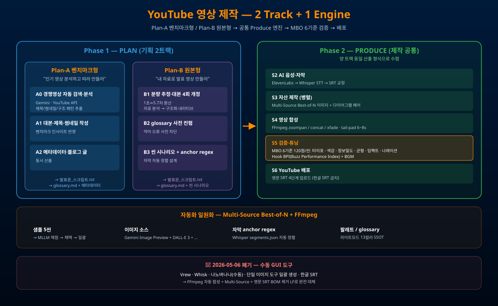

발표문_스크립트.txt + glossary.md)으로 수렴 후, 공통 Produce 엔진(S2~S6)으로 진입한다.

youtube-generate-코어4 워크플로 흡수youtube-video-코어7 시작 단계 흡수ElevenLabs → Whisper STT → SRT 교정
Multi-Source Best-of-N 이미지 + 다이어그램 페어 (병렬)
FFmpeg zoompan / concat / xfade · tail-pad 6~8s
MBO 6기준 120점/씬 + Hook BPI + BGM
영문 SRT 4단계 업로드
| 기준 | 설명 |
|---|---|
| 타이포 | 가독성·계층·여백 (영상에서 즉시 읽힘) |
| 색감 | 라이트모드 13컬러 팔레트 SSOT 준수 |
| 정보 밀도 | 씬당 핵심 1~3개, 과밀도 금지 |
| 균형 | 레이아웃·시각 무게중심 |
| 임팩트 | Hook BPI(Buzz Performance Index) |
| 나레이션 정합성 | 음성·자막·화면 anchor regex 정렬 |
| 사례 | 트랙 | 분량 | 평균 점수 |
|---|---|---|---|
| BuzzLab AI 챔피언 출품작 (2026-04-22) | Plan-B | 177.67초 · 28씬 · 70MB | v5 평균 80.4/120 |
| Sunny's QC 4종 소개 (2026-04-29) | Plan-B | 641.23초 · 50씬 · 34.16MB | 평균 ~95/120, anchor 49/50 (98%) |
| 폐기 | 사유 | 대체 |
|---|---|---|
| Vrew | 구닥다리 GUI 수작업 보틀넥 | FFmpeg 자동 합성 (S4) |
| Whisk · 나노바나나(수동) | 단일 소스 품질 편차 | Multi-Source Best-of-N |
| 단일 이미지 도구 일괄 생성 | 50씬 일괄 후 재작업 비용 폭발 | 샘플 5씬 → 채점 → 일괄 |
| 한글 SRT 파일명 업로드 | YouTube 무한 실패 | 영문 파일명 + BOM 제거 + LF |
| 수동 자막 합치기 | 시간 소모 + 동기화 오류 | Whisper segments.json + anchor regex 자동 정렬 |
| #39 HTML + Vercel 배포 | 영상 외 콘텐츠 신속 공유 |
| #23 멀티 모델 이미지 제작 | S3 자산 제작 — Multi-Source Best-of-N 원리 |
| #12 MBO | S5 검증의 6기준 채점표 기반 |
| #32 앱 vs Code | 대본 카피·문구는 앱, 실행은 Code |